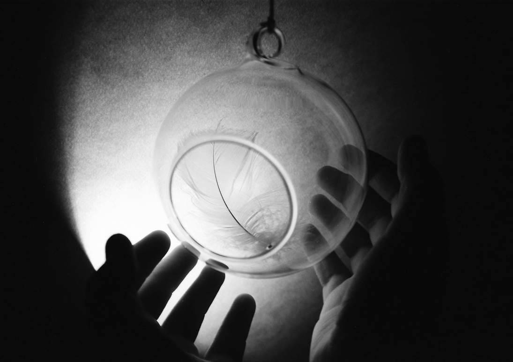

Tenderness
I found these feathers in summer. The first one flew in the wind and I just caught it in a palm of my hand to see it closer… It was so frail and tender. I brought it home and put it on a shelf.
The second one was found sometime later. It layed on the road after a short rain. When I picked it up I look through it, and through its transparency I saw tiny drops of water. It was so beautiful and this beauty was so fleeting… I needed to save it as carefully as I could. I did it in my mind. And the other day I did it in photography. Because I can’t trust my mind as much as I trust photography.
November 2018
